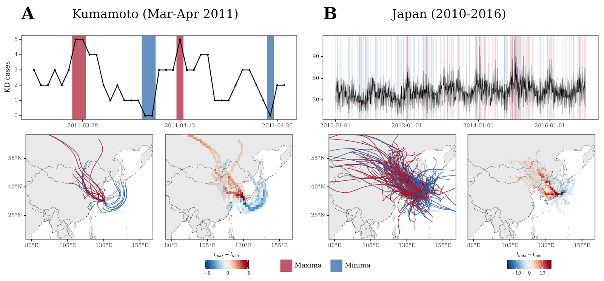

README
Contents
README#
This repository contains the materials and code necessary to reproduce the analysis on the manuscript Fine metal-rich aerosols from intensive farming and urban pollution promote Kawasaki disease outbreaks.
Since the manuscript is in the pre-publication step, we are keeping the source code on a private repository in GitHub. To aid in the review process and provide maximum transparency and ensure the reproducibility of the experiments, we are sharing the repository (which can be cloned and then executed) with the step-by-step code used to generate the analyses and figures shown in the manuscript (and possibly some more).
To ensure the anonimity during the peer-review process, we are using Gitfront to expose a read-only version of the repository which can only be accessed through the shared link. Since most of the code is based on Jupyter Notebooks executing Python and R code, and Gitfront doesn’t render them in a nice manner, the Github Pages site (rendered thanks to the Jupyterbook and Sphinx projects) of the repo can be accessed through the GitHub Pages Site with a nice render of the notebooks.
Reproducibility#
The main requirements to execute the code will be to have installed in your computing environment:
Python >=3.8
R >= 4.1.2
HYSPLIT 5.2.0
Instructions to reproduce the environment follow:
Python#
To ensure reproducibility of the Python environment, we use poetry, so the dependencies of the project are defined in the pyproject.toml file. Go to the poetry docs to find out how to install it in your machine in case it’s not there already.
Then, clone this repo, go to the root folder, and run poetry install.
R#
The R code used in the analyses was executed using R version 4.1.2, and the list of dependencies is the following, so make sure to have them installed in your environment:
ggplot2
dplyr
tidyr
readr
stringr
tibble
reprex
lubridate
caTools
TeachingDemos
reshape2
caret
ggpubr
purr
plot3D
Hmisc
progress
HYSPLIT#
To estimate the backtrajectories of air sources, in this study we use HYSPLIT 5.2. You will need a local installation of the last version of HYSPLIT in order to be able to run the model yourself. Check the documentation on the provided link to be able to perform the installation on your local machine, as it changes depending on your OS.
Meteorology data#
You will also need to download the associated gridded meteorology data in order to be able tu run HYSPLIT. In this case, the data used is GDAS 1x1 data, from 2011 to 2016. This is not included in the repository as it contains several GB of information. This data is available for download via the NOAA’s archives FTP, accessible through this link: https://www.ready.noaa.gov/archives.php.
Code#
We have shared three different notebooks to disclose how different parts of the analyses in the manuscript are made:
1. HYSPLIT trajectories#
This notebook can be accessed here.
Here you can check how the backtrajectories shown in Figure 3 and Supplementary Figure 2 traced with HYSPLIT are generated.

2. Metal-rich aerosols and KD in Kumamoto#
This notebook can be accessed here.
Here, you can check the analysis that relates the presence of metal-rich aeorosols and KD in Kumamoto.

3. Kawasaki Disease’s sub-weekly cycle figures.#
This notebook can be accessed here.
Analysis and figures related to the LIDAR profiles and subweekly cycle of Kawasaki Disease.